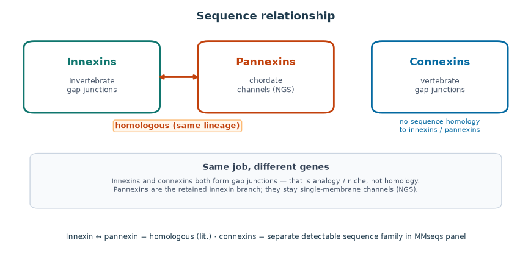
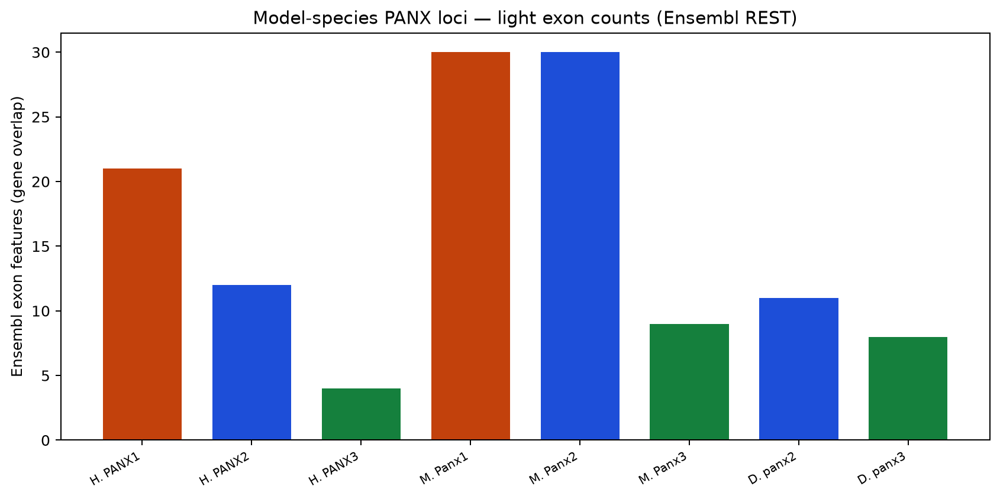

Literature map: innexin ↔ pannexin homologous; connexins separate.
Pannexin insights
Curated figures for the third family: homologous to innexins, not to connexins. Numbers and trees below come from the UniProt panel built for this thesis.
Literature: early chordate innexin bottleneck → glycosylated remnant (pannexins) → later connexin diversification (Welzel & Schuster 2022).
This panel: UniProt sequences, clade × type counts, panx×inx MMseqs (~90% of pannexins hit ≥1 innexin at the same thresholds where innexin×connexin finds none), and an IQ-TREE on the curated set. A few generic UniProt symbols were typed by best hit to named paralogs (3 reassigned). Lancelet / lamprey copy numbers reflect what is in UniProt — not a full genome census.

Literature map: innexin ↔ pannexin homologous; connexins separate.

N-X-S/T / NGS reading: docking blocked on the pannexin branch.

This panel: ~90% of pannexins hit ≥1 innexin (same thresholds as inx×cnx = 0).

3-mer space overlap with innexins — expected for related sequences.

Clade × PANX1/2/3 occupancy in the UniProt panel.

Panel copy numbers for early chordates vs sample mammals (not a genome census).

Rendered IQ-TREE on the curated panel (+ Ciona innexin outgroups).

Ensembl exon counts for model-species PANX genes (human / mouse / zebrafish).